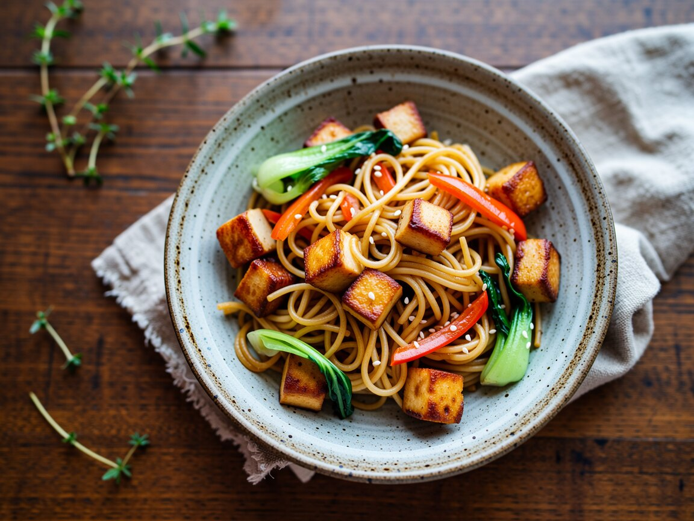

Sesam-Nudeln mit Tofu und Pak Choi
Knuspriger Tofu, viel Gemüse, ein Hauch Ingwer.
Zutaten
- 250 g Mie- oder Udon-Nudeln
- 200 g Räuchertofu
- 2 Pak Choi
- 1 Karotte
- 1 rote Paprika
- 1 Stück Ingwer
- 2 Knoblauchzehen
- 3 EL Sojasoße
- 1 EL Sesamöl
- 1 EL Ahornsirup
- Sesam, etwas Öl
So geht's
- Nudeln nach Packung garen.
- Tofu würfeln, in Öl knusprig braten und herausnehmen.
- Karotte, Paprika und die Pak-Choi-Stiele 4 Minuten braten, dann Ingwer, Knoblauch und die Blätter dazu.
- Nudeln, Tofu, Sojasoße, Sesamöl und Sirup unterschwenken und mit Sesam bestreuen.
Hält zwei Tage im Kühlschrank. Kalt mit einem Spritzer Sojasoße, warm mit einem Schluck Wasser in der Mikrowelle.